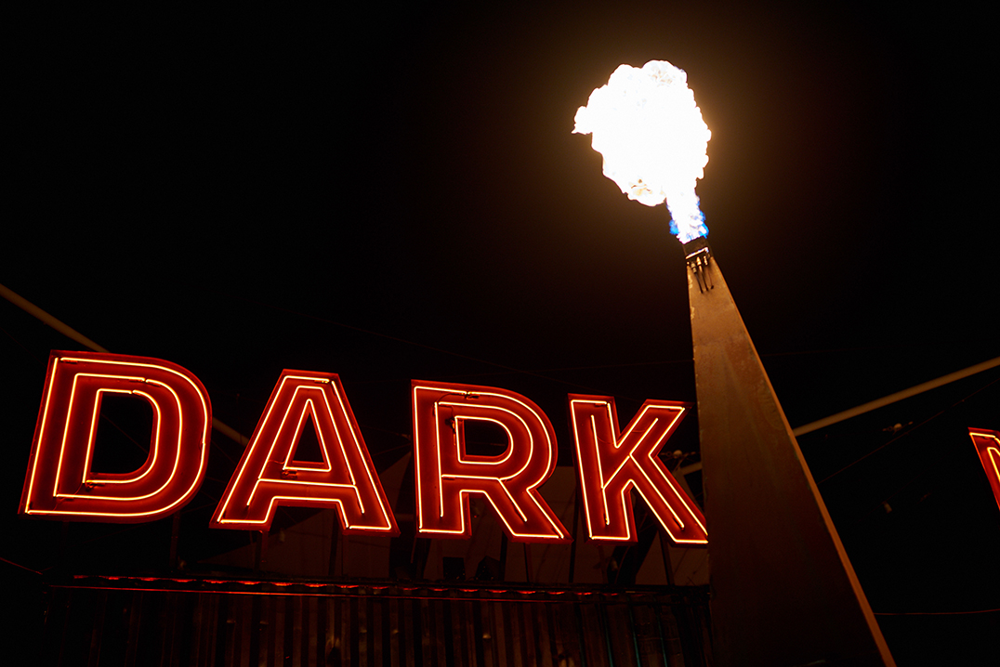

Features - The Boweress
New Wonders, New Horrors
12 April, 2018
With themes of darkness, light, death and rebirth it’s unsurprising that interactive night art installations, winter feasts beyond your imagination, musical theatre and dark ancient rituals are the norm here at dark mofo.
The winter solstice is all about bringing people together through art, music and dance and what better place than within the natural beauty of Hobart and it’s nearby surroundings.
The heralding of siren song from Melbourne artist; Byron J Scullin underscores the whole festival by marking sunrise and sunset each day. The sound is projected via helicopter and various speakers throughout the city turning the city CBD into a living canvas. This is where high art meets the two faced nature of Gotham City. Albeit mildly creepy, this demands attention and creates anticipation of what is to come throughout the festivities. The festival can be a sensory overload at times and it’s best to just roll with it till the next environment opens itself up to you.
A masonic temple is an interactive art space by night holding part of the program for Welcome Stranger. This is a testament to how DARK MOFO uncovers everyday spaces and converts them into living art habitats.
Upon entering the Winter Feast, you are reminded of the power and symbolism of the cross with a never ending crescendo of neon crosses descening a grand hall. Like some sort of classical triangle its a marvel to feel so small in this space, yet so intimately connected to others.
Keeping your mind and senses alert and open is key to fulfilling a true DARK MOFO experience. A full spectrum of human emotion can be experienced if one let’s oneself go. Each place gives over something and we in turn uncover something of ourselves. Only 1 more year to go! Dark Mofo
